-
To verify the functionalities of report master
14:30:05 PM / 30:28:221 Fail
To verify the functionalities of report master
02.22.2023 14:30:05 02.22.2023 14:30:33 30:28:221 · #test-id=1FailTo verify system allow user to do a modification on already approved recordGiven Navigate to ULS application URLstepdefinitions.HooksClass.addScreenshot(io.cucumber.java.Scenario)screenshot Then login with valid maker credentialsstepdefinitions.HooksClass.addScreenshot(io.cucumber.java.Scenario)screenshot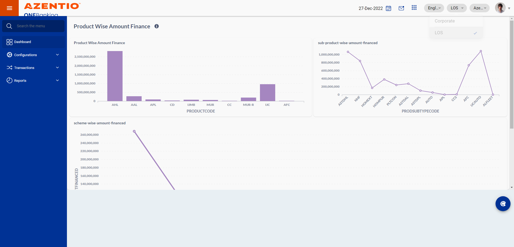And go to configuration main menustepdefinitions.HooksClass.addScreenshot(io.cucumber.java.Scenario)screenshot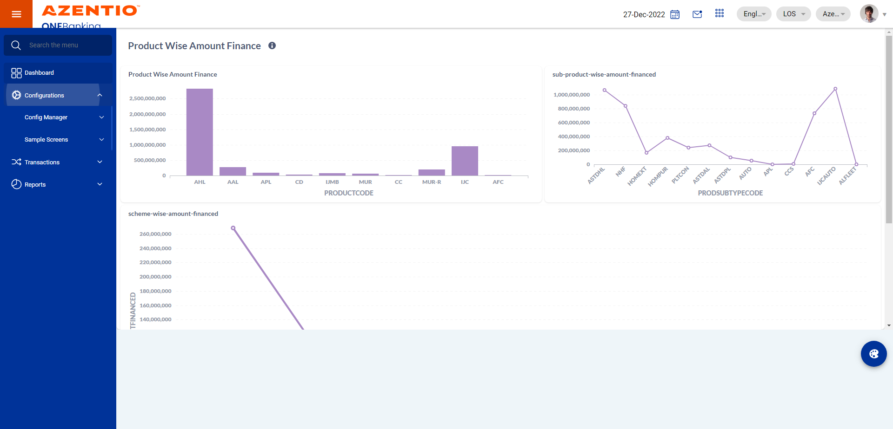And click on config Manager main modulestepdefinitions.HooksClass.addScreenshot(io.cucumber.java.Scenario)screenshot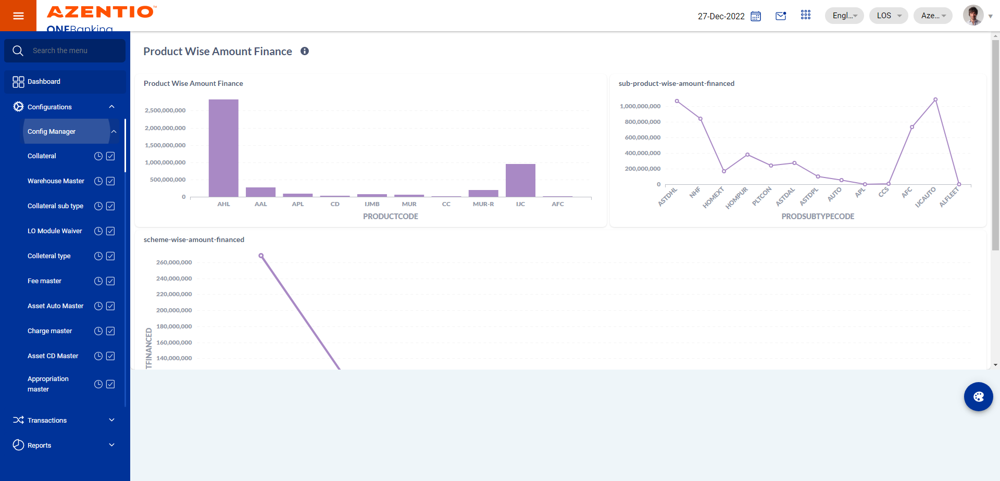And Click the Eye icon of report masterstepdefinitions.HooksClass.addScreenshot(io.cucumber.java.Scenario)screenshot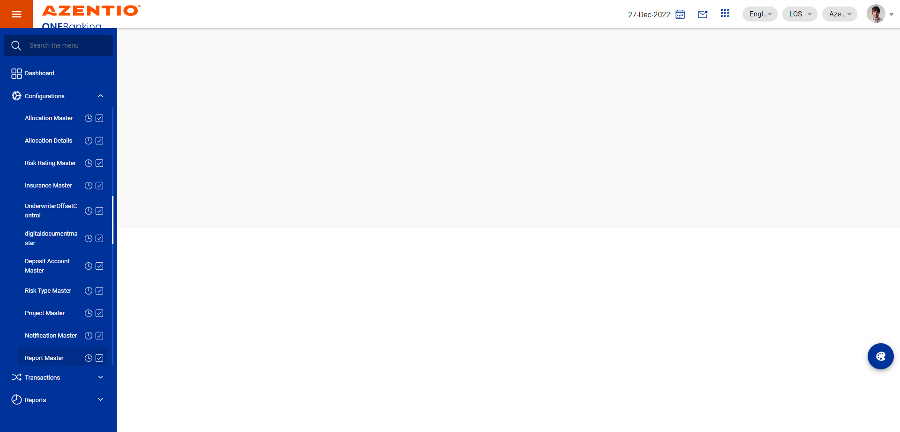And click on approved records button of report masterstepdefinitions.HooksClass.addScreenshot(io.cucumber.java.Scenario)screenshot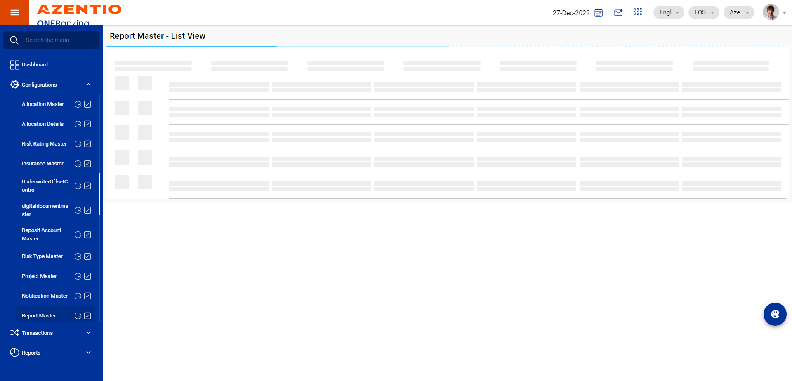Then click on edit button of report master record to modifystepdefinitions.HooksClass.addScreenshot(io.cucumber.java.Scenario)screenshot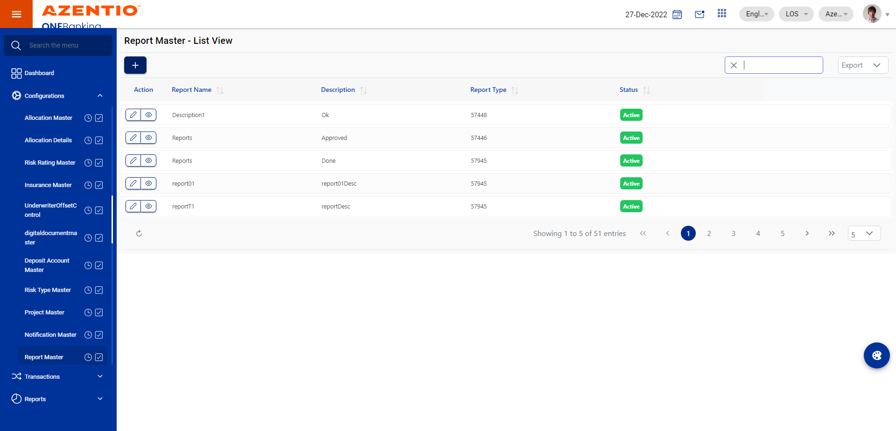Then verify system allow user to do a modification on already approved report master recordStep skippedThen verify system display the confirmation message in the report master screen post clicking on save buttonStep skippedThen confirmation message displays in the report master screen with reference idStep skippedThen click on inbox button to select the record of report masterStep skippedAnd select the record of report master from inbox to submitStep skippedThen click on submit button to submit the record of report masterStep skippedThen system should display confirmation message after submit report master recordStep skippedThen capture checker ID of report masterStep skippedThen logout user from maker stageStep skippedAnd User Login as checker to approve report master recordStep skippedThen click on inbox button to select the record of report masterStep skippedThen select the record of report master to approveStep skippedThen select approve button for approve the report master recordStep skippedThen enter remark for approve the record of report masterStep skippedThen click on approve button of the report master recordStep skippedThen system should display confirmation message after approve the report master recordStep skippedThen logout user from checker stageStep skippedAnd User Login as makerStep skippedThen user should navigate to report masterStep skippedAnd click on approved records button of report masterStep skippedThen verify all the captured modified data of report master from makers side should be saved and stored in the systemStep skipped
Then login with valid maker credentialsstepdefinitions.HooksClass.addScreenshot(io.cucumber.java.Scenario)screenshot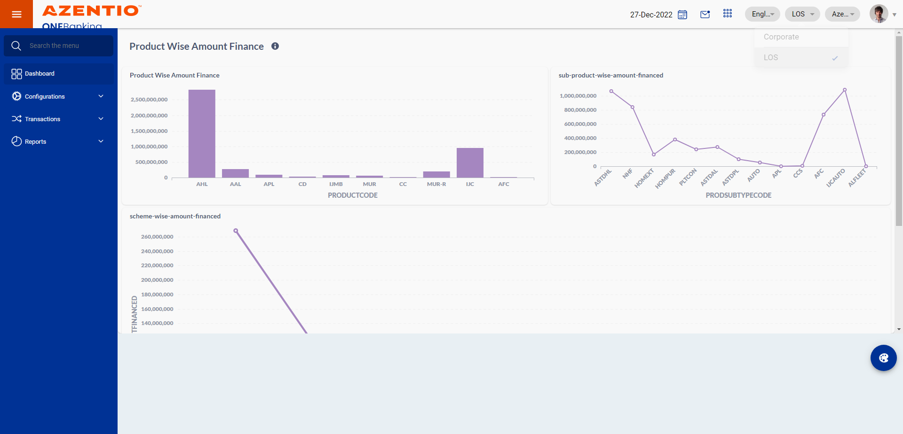And go to configuration main menustepdefinitions.HooksClass.addScreenshot(io.cucumber.java.Scenario)screenshot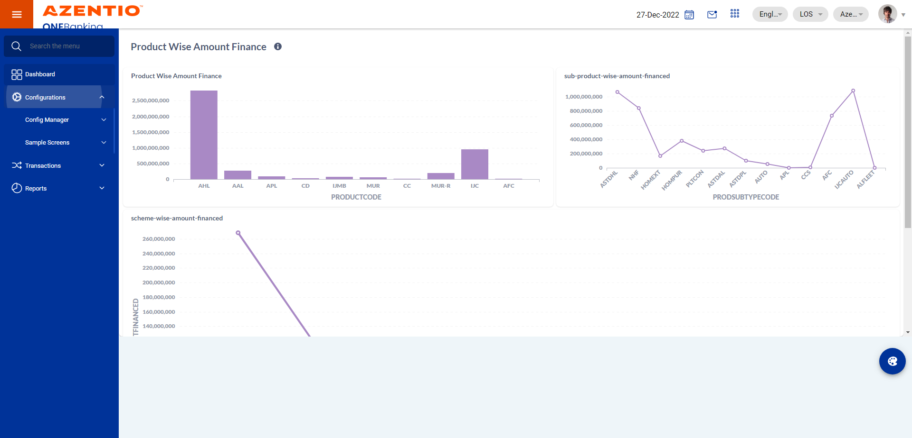And click on config Manager main modulestepdefinitions.HooksClass.addScreenshot(io.cucumber.java.Scenario)screenshot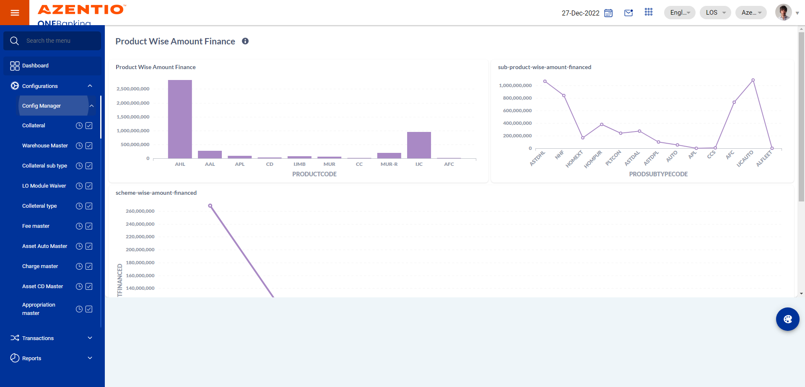And Click the Eye icon of report masterstepdefinitions.HooksClass.addScreenshot(io.cucumber.java.Scenario)screenshot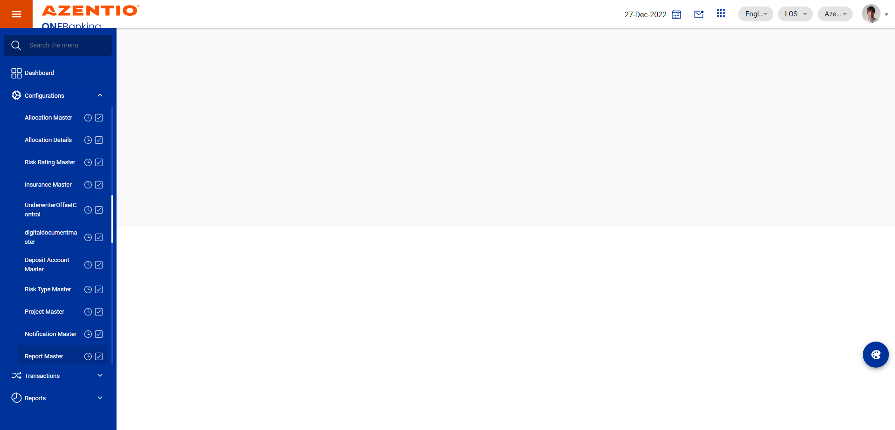And click on approved records button of report masterstepdefinitions.HooksClass.addScreenshot(io.cucumber.java.Scenario)screenshot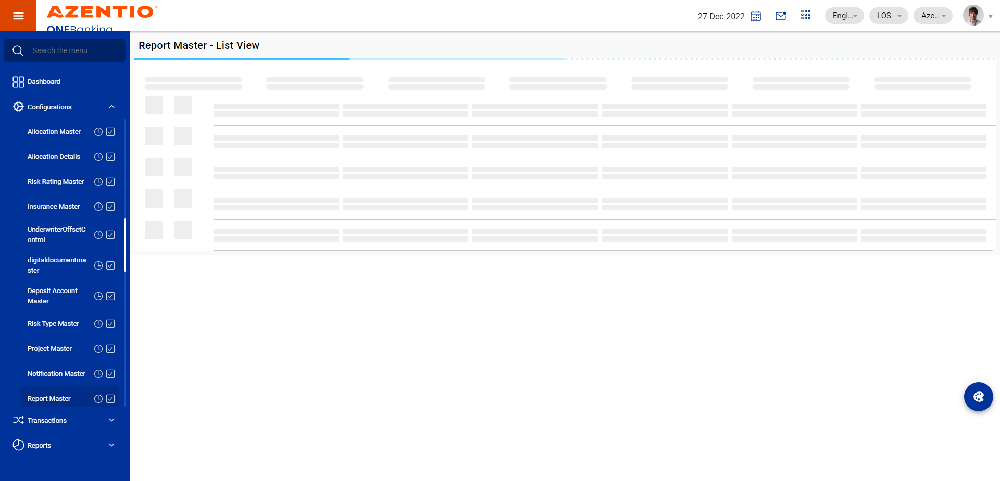Then click on edit button of report master record to modifystepdefinitions.HooksClass.addScreenshot(io.cucumber.java.Scenario)screenshot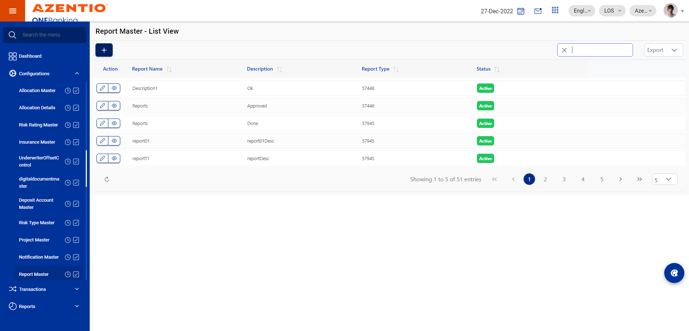Then verify system allow user to do a modification on already approved report master recordStep skippedThen verify system display the confirmation message in the report master screen post clicking on save buttonStep skippedThen confirmation message displays in the report master screen with reference idStep skippedThen click on inbox button to select the record of report masterStep skippedAnd select the record of report master from inbox to submitStep skippedThen click on submit button to submit the record of report masterStep skippedThen system should display confirmation message after submit report master recordStep skippedThen capture checker ID of report masterStep skippedThen logout user from maker stageStep skippedAnd User Login as checker to approve report master recordStep skippedThen click on inbox button to select the record of report masterStep skippedThen select the record of report master to approveStep skippedThen select approve button for approve the report master recordStep skippedThen enter remark for approve the record of report masterStep skippedThen click on approve button of the report master recordStep skippedThen system should display confirmation message after approve the report master recordStep skippedThen logout user from checker stageStep skippedAnd User Login as makerStep skippedThen user should navigate to report masterStep skippedAnd click on approved records button of report masterStep skippedThen verify all the captured modified data of report master from makers side should be saved and stored in the systemStep skipped
Started
Feb 22, 2023 02:30:03 PM
Ended
Feb 22, 2023 02:30:33 PM
Features Passed
0
Features Failed
1
Features
Scenarios
Steps
Timeline
Tags
| Name | Passed | Failed | Skipped | Others | Passed % |
|---|---|---|---|---|---|
| @AT_RA_007 | 0 | 1 | 0 | 0 | 0% |
System/Environment
| Name | Value |
|---|---|
| version | 10 |
| os | windows |
-
@AT_RA_007
1 tests
@AT_RA_007
1 failedStatus Timestamp TestName Fail 14:30:05 PM To verify system allow user to do a modification on already approved record To verify the functionalities of report master.To verify system allow user to do a modification on already approved record
-
java.lang.IllegalArgumentException
1 tests
java.lang.IllegalArgumentException
1 failedStatus Timestamp TestName Fail 14:30:31 PM Then click on edit button of report master record to modify To verify the functionalities of report master.To verify system allow user to do a modification on already approved record.Then click on edit button of report master record to modify